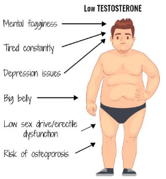
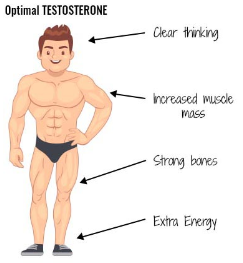

Steroids Natural and Synthetic and Exploring an Issue in Synthetic Steroids Part 1
Steroids: Natural and Synthetic
- Most people would assume that it is the weightlifter, not the boy with asthma.
- The truth is, however, that the only person we know to be using steroids, from these photographs, is the boy using the asthma inhaler.
- The use of illegal substances in the world of sports has led to a very negative perception of steroids.
- Steroid refers to a class of lipids that includes cholesterol and the hormones derived from cholesterol, which act on receptors inside cells.
Callout
Natural Steroid Hormones
All genes that are regulated by a specific steroid hormone have the same DNA sequence that binds to the hormone-receptor complex.
- This sequence is called a steroid hormone response element. For example, all genes controlled by a glucocorticoid have a glucocorticoid response element associated with them.
- Therefore, the release of a glucocorticoid into the bloodstream activates the transcription of genes through the glucocorticoid response element.
It is a steroid that helps to build muscle mass, which is one of the male secondary sex characteristics.
- By binding to receptors inside the cell nucleus, testosterone controls the metabolic genes that build the proteins used for muscle development.
- As testosterone increases, the body builds more muscle mass. This increase in muscle mass occurs naturally in the male body during puberty, but it can also be induced by the use of more testosterone.


Other natural steroid hormones include aldosterone, which is produced by the adrenal glands in response to stress, and cortisol, which is produced by the adrenal cortex and raises the blood glucose level.
- Estrogens are predominantly female sex hormones, including estradiol, that trigger sexual development
- Progestins are predominantly female sex hormones, including progesterone, that control the menstrual cycle.


Callout
Synthetic Steroid Hormones
- Synthetic hormones are chemicals that have been designed to mimic the actions of natural hormones.
- For example, one group of synthetic hormones called anabolic steroids, mimics many of the muscle-building characteristics of testosterone. There are many synthetic hormones that have been developed for legitimate medical purposes
Performance Enhancement in Sports
- The negative perception of steroids comes largely from the illegal use of anabolic steroids and other performance-enhancing substances in the world of sports
- A small percentage of athletes are willing to risk their health and reputation to gain even a small competitive edge.

Ways for athletes to gain an unfair advantage
One of the most common ways is the use of anabolic steroids. These are synthetic steroids that, much like testosterone, build muscle mass.
- Anabolic steroids provide an advantage only in sports where muscle mass is important.
- Erythropoietin (EPO) is a protein hormone that can stimulate red blood cell production. With more red blood cells, the blood can carry more oxygen, providing longer endurance and more energy.
- Some performance-enhancing drugs have a mood-altering effect.
- For example, anabolic steroids increase levels of aggressiveness. This “roid rage”, as it is sometimes called, can lead a person to uncharacteristically violent or dangerous actions. Other drugs cause anxiety, depression, paranoia, or addiction.
In 1988, Canadian sprinter Ben Johnson was stripped of his Olympic gold medal because of his use of unapproved substances.
- Baseball star Mark McGwire gained fame for hitting a record number of home runs during the 1998 season, but he later admitted to having used banned steroids to improve his hitting power.
- In June 2010, the University of Waterloo Warriors football program was suspended for a year because of the use of performance-enhancing drugs by a few of its players.
- Some of the players were suspended for two years.
World Anti-Doping Agency (WADA)
- The World Anti-Doping Agency (WADA) promotes and coordinates efforts against doping in all types of sports.
- Begun in 1999 in Switzerland, it is led by the International Olympic Committee.
WADA uses some very refined laboratory methods to detect banned substances.
- For example, the human body makes its own supply of EPO, but there is a slight chemical difference in the body’s EPO and the EPO injected as a performance enhancer.
- WADA’s sophisticated laboratories can detect the difference.
Callout
The Cost of Performance-Enhancing Drug Use


Large amounts of money and fame are at stake in the world of sports.
- As a result, some athletes are willing to ignore the risks of using performance-enhancing drugs (PEDs).
- Most people probably think of anabolic steroids when they hear the term “performance-enhancing drugs”, but there are many other hormones, drugs, and techniques that can be used to get a competitive edge in sports.
- For example, erythropoietin (EPO) and blood doping can enhance performance in aerobic sports such as running and cycling.
- Painkillers and anti-inflammatory drugs can also enhance performance by allowing the athlete to “play through the pain.” Other drugs, such as beta blockers and caffeine, can lower or raise the heart rate and raise alertness for better performance in particular sports.

Select each tab to learn more.
Some competitive athletes, as well as others who want peak physical performance, resort to drugs as a way to boost their body’s natural abilities.
- Many defend the practice by claiming that performance-enhancing drug (PED) use is so widespread, that it is impossible to compete at an elite level without the advantage these drugs offer.
- The issue of PEDs can be examined from many perspectives, including those of an athlete, a coach, a fan, a parent, a doctor, a sports psychologist, and a fitness trainer.
- Moreover, different sports (and different levels of these sports) have different considerations.
- Drugs that benefit weightlifters might do more damage to the body than drugs that benefit aerobic athletes.
- To conduct research about steroid PEDs and their advantages and disadvantages, and to make a personal decision about whether the risks associated with these drugs outweigh the potential benefits.
Once you are done, inform your teacher. If you finish early, work with a peer and help them finish the activity or move on to an advanced activity.
Turn your textbook on pages 494-495. Create a technical report about the advantages and disadvantages of Steroid PEDs by researching, analyzing, and defending a decision.
- Make sure to follow all the instructions and all the ideas must be coherent and focused on the goal and issues of the report. No need to hold a debate, just prepare a written report answering all the questions on “Research and Possible Solutions”.